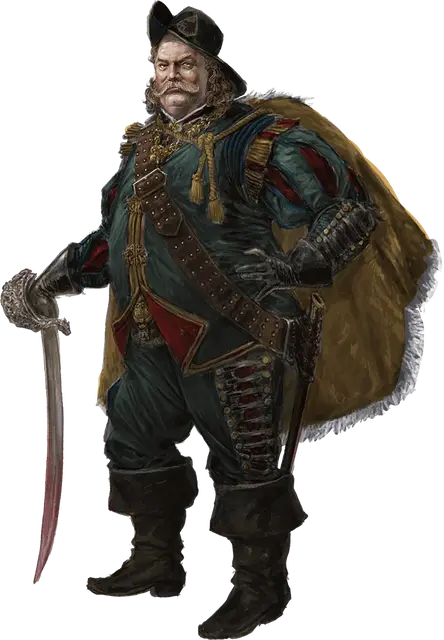

Мирт
Mirt
Средний Гуманоид (Человек), хаотично-добрый, именной НИП

Класс Доспеха 16 (наручи защиты)
Хиты 153 (18к8 + 72)
Скорость 30 футов
| мод | спас | ||
|---|---|---|---|
| СИЛ | 18 | +4 | +4 |
| ЛОВ | 18 | +4 | +8 |
| ТЕЛ | 18 | +4 | +4 |
| мод | спас | ||
|---|---|---|---|
| ИНТ | 15 | +2 | +2 |
| МДР | 12 | +1 | +5 |
| ХАР | 15 | +2 | +2 |
Навыки Акробатика +8, Атлетика +8, Восприятие +5, Скрытность +8, Убеждение +6
Чувства пассивное Восприятие 15
Языки Общий, Дварфийский
Опасность 9 (5000 опыта)
Бонус мастерства +4
Особенности
Особое снаряжение. Мирт носит наручи защиты и кольцо регенерации. Он использует длинный меч +1 и кинжал +1.
Увёртливость. Если Мирт подвергается действию эффекта, позволяющего совершить спасбросок Ловкости, чтобы получить только половину урона, Мирт вместо этого не получает урон, если преуспеет в спасброске, и получит лишь половину урона, если провалит спасбросок.
Скрытая атака (1/ход). . Мирт причиняет дополнительный урон 14 (4к6), если попадает по цели атакой оружием, совершённой с преимуществом к броску атаки, или же если цель находится в пределах 5 футов от дееспособного союзника Мирта, и Мирт совершал бросок атаки без помехи.
Жестокость. Рукопашное оружие причиняет одну дополнительную кость своего урона, когда Мирт попадает им (уже включено в атаку).
Действия
Мультиатака. Мирт совершает три атаки: две длинным мечом +1 и одну кинжалом +1.
Длинный меч +1. Рукопашная атака оружием: +9 к попаданию, досягаемость 5 футов, одна цель. Попадание: 14 (2к8 + 5) рубящего урона или 16 (2к10 + 5) рубящего урона, если используется для атаки двумя руками.
Кинжал +1. Рукопашная или Дальнобойная атака оружием: +9 к попаданию, досягаемость 5 футов или дистанция 20 / 60 футов, одна цель. Попадание: колющий урон 7 (2к4+5).
Реакции
Парирование. Мирт добавляет 2 к своему КД против одной атаки ближнего боя, которая поразит его. Для этого Мирт должен видеть нападающего и владеть оружием ближнего боя.
Описание
Когда-то его звали Миртом Безжалостным, а ещё Старым Волком. Он разбогател и прославился как искатель приключений и ловелас. Сейчас пожилой и поумневший Мирт стал одним из Лордов в масках, Арфистом и советником Лейраль Сильверхенд. Годы его не сломили, и хотя он явно прибавил в весе, но остался необычайно силён, бодр и хитёр. Мирт живёт столетиями благодаря магии, и из всех Лордов в масках он меньше всех старается скрывать свою личность.
Несмотря на кажущуюся грузность, при необходимости Мирт способен двигаться быстро, и навыки искателя приключений он не забыл. Его жена Аспер умерла несколько лет назад, а его старый особняк видал лучшие дни. Днём Мирт с головой погружается в политику, а ночами забывается в пьянстве и разгуле.
Сокровища
У Мирта полным-полно разных магических предметов, но с собой он носит лишь немногие. При необходимости он может взять и другие.
Помимо прочего магического снаряжения, у Мирта есть комплект одежды Лорда. Он надевает его только на официальных встречах с другим и Лордами в масках.